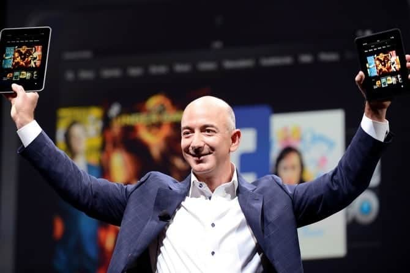
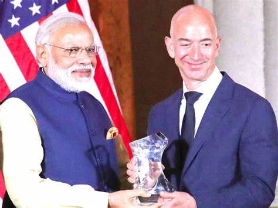
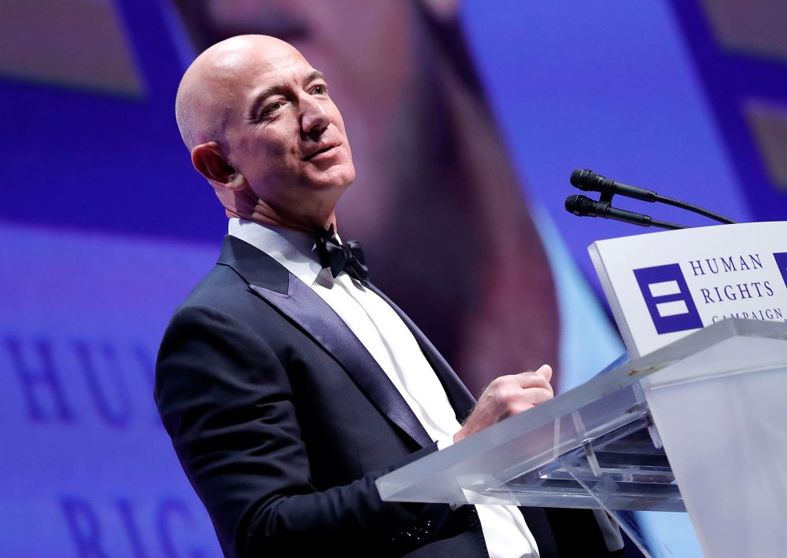
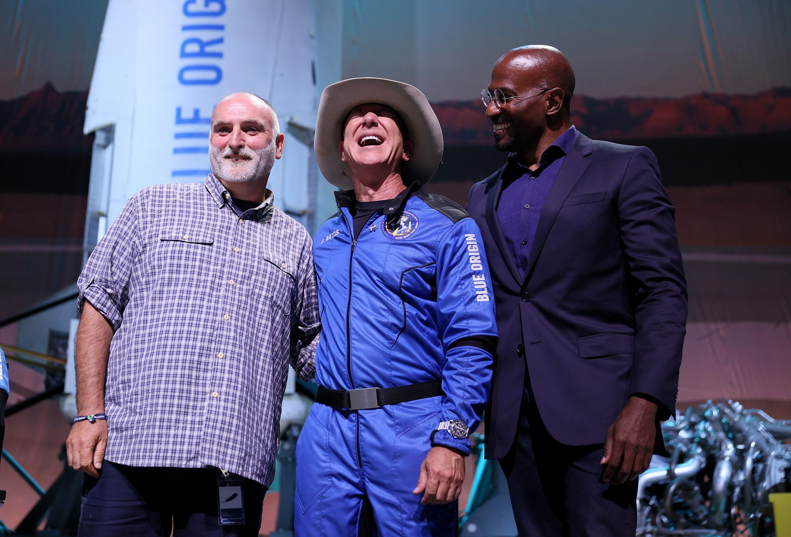
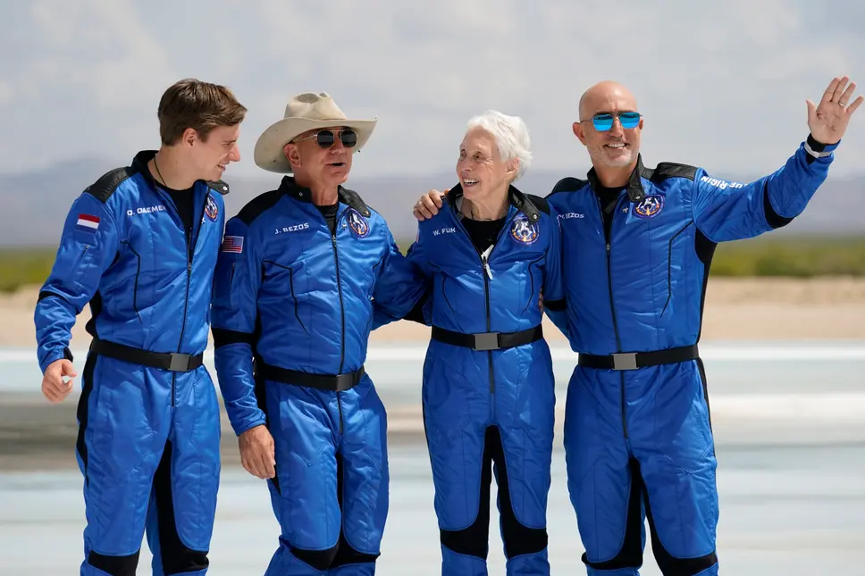
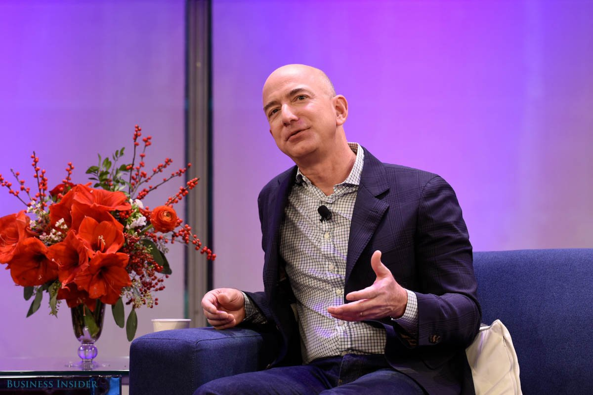
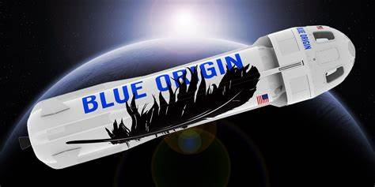

I knew that if I failed I wouldn't regret that, but I knew the one thing I might regret is not trying.
Jeffrey Preston Bezos, born on January 12, 1964, in Albuquerque, New Mexico, is a visionary entrepreneur and business magnate who reshaped the landscape of e-commerce. As the founder of Amazon, one of the world's largest and most influential technology companies, Bezos has left an indelible mark on the business world. Raised in Miami, Florida, he developed an early passion for technology, setting the stage for a remarkable journey that would redefine the way people shop and engage with the digital realm. From his humble beginnings to becoming one of the wealthiest individuals globally, Jeff Bezos's life is a testament to innovation, perseverance, and the pursuit of bold ideas.
Jeff Bezos attended Miami Palmetto Senior High School in Miami, Florida. During high school, he developed an early interest in technology and science.
Bezos went on to study at Princeton University. In 1986, he graduated summa cum laude with a Bachelor of Science degree in Electrical Engineering and Computer Science. During his time at Princeton, he also served as the president of the Princeton chapter of the Students for the Exploration and Development of Space.
In July 1994, Jeff Bezos founded Amazon.com as an online bookstore in Seattle, Washington.
On May 15, 1997, Amazon went public, trading on the NASDAQ stock exchange under the ticker symbol "AMZN.
Jeff Bezos founded Blue Origin in 2000 with the goal of enabling private human access to space. Blue Origin has worked on various aerospace projects, including the development of reusable rocket technology.
In March 2002, Amazon launched Amazon Web Services (AWS), providing a suite of cloud computing services.
In November 2007, Amazon introduced the Kindle e-reader, revolutionizing the book industry with digital reading.
In October 2013, Jeff Bezos personally acquired The Washington Post, a prominent American newspaper.
In January 2018, Amazon opened its first cashier-less convenience store, Amazon Go, in Seattle.
In February 2021, Jeff Bezos announced his decision to step down as Amazon's CEO and transition to the role of Executive Chairman.
Jeff Bezos played a pivotal role in revolutionizing the retail industry by founding Amazon, transforming it from an online bookstore into a global e-commerce giant. Amazon's success set new standards for online shopping and influenced the way businesses operate in the digital age.
Bezos is known for his innovative mindset and willingness to take risks. Under his leadership, Amazon diversified its services beyond e-commerce, venturing into cloud computing (AWS), digital streaming (Amazon Prime Video), artificial intelligence, and more. This approach has reshaped multiple industries.
Bezos instilled a customer-centric culture at Amazon, prioritizing long-term customer satisfaction over short-term profits. This focus on the customer experience became a hallmark of Amazon's success.
Through Blue Origin, Bezos has actively contributed to the advancement of private space exploration. His vision includes enabling humans to live and work in space, advocating for a future where millions of people can live beyond Earth.
In 1999, Jeff Bezos was named TIME magazine's Person of the Year in recognition of his role in the e-commerce boom.
Bezos and the team at Amazon were awarded an Emmy in 2016 for their role in transforming the way people watch television.
Blue Origin was inducted into the Space Technology Hall of Fame in 2014 for its work on the New Shepard rocket and the BE-3 liquid hydrogen liquid oxygen engine.
In 2019, Bezos received the Excellence in Industry Award from the International Astronautical Federation for his significant contributions to the development of the space industry.
Jeff Bezos consistently ranked high on Forbes' list of the world's most powerful people, reflecting his influence on global business and technology.